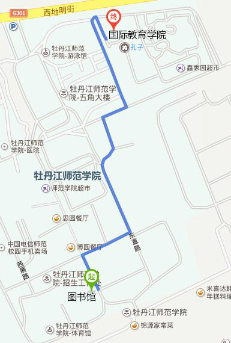

第五届中国基于搜索的软件工程研讨会，黑龙江牡丹江
| 会议报到 | 2016年06月23日 |
| 会议召开 | 2016年06月24日 |
Programming Committee
姚新
英国伯明翰大学
个人主页
Advanced Machine Learning Approaches to Software Defect Prediction
In software defect prediction, static code attributes are extracted from previous releases of software with the log files of defects, and used to build models to predict defective modules in the next release. The prediction helps to locate parts of the software that are more likely to contain defects. This is particularly useful when the project budget is limited, or the whole software system is too large to be tested exhaustively, because a good defect predictor can guide software engineers to focus limited testing resources on defect-prone parts of the software. To achieve the best outcomes, it is essential that the predictive model is as accurate as possible. Machine learning algorithms have been used to learn such a model from historical data. This talk describes two recent efforts in applying advanced machine learning approaches to software defect prediction by exploiting the characteristics of software defect prediction problems. First, when software defect prediction is formulated as a classification problem (as many researchers do), it is a highly imbalanced problem because the number of software modules with defects is far less than that without defects. In other words, we have a lot less positive cases than the negative cases in the training data set. Such a skewed data distribution poses challenges to machine learning algorithms. We will describe a recently developed algorithm, AdaBoost.NC, which can enhance the learning performance on the minority class without sacrificing the performance on the majority class. AdaBoost.NC combines the strength of AdaBoost and negative correlation learning, two ensemble learning algorithms, in tackling the software defect prediction problem. Second, instead of formulating software defect prediction as a classification or even a regression problem, we define it as a ranking problem, because the outcome of software defect prediction is normally used to rank software modules so that testing resources could be assigned. If it is the ranking that is actually used, why not formulate software defect prediction as a learning-to-rank problem and try to learn the ranking directly? This talk will introduce the learning-to-rank approach to software defect prediction. Experimental studies using real-world software data sets have been carried out to demonstrate the strength and potential weakness of our approaches.
Xin Yao is a Chair (Professor) of Computer Science and the Director of CERCIA (Centre of Excellence for Research in Computational Intelligence and Applications) at the University of Birmingham, UK. He is an IEEE Fellow and a Distinguished Lecturer of IEEE Computational Intelligence Society (CIS). He previously served as the Editor-in-Chief (2003-08) of IEEE Transactions on Evolutionary Computation and the President (2014-15) of IEEE CIS. His main research interests include evolutionary computation, ensemble learning, and their applications, especially in software engineering. His foci on software engineering include software effort estimation, software defect prediction, software module clustering and software project scheduling. His papers won the 2001 IEEE Donald G. Fink Prize Paper Award, 2010 and 2015 IEEE Transactions on Evolutionary Computation Outstanding Paper Awards, 2010 BT Gordon Radley Award for Best Author of Innovation (Finalist), 2011 IEEE Transactions on Neural Networks Outstanding Paper Award, and many other best paper awards. He won the prestigious Royal Society Wolfson Research Merit Award in 2012 and the IEEE CIS Evolutionary Computation Pioneer Award in 2013.
目前可以注册，欢迎各位参加 CSBSE 2016 ！
请各位老师和同学在 5 月 30 日前提交注册，邀请函和回执见附件。
本次研讨会将不收取注册费，食宿需自理。
06月23日, 星期四 | |
| 14:00 – 20:00 | 报到 |
06月24日, 星期五 | |
| 日程待定 |
牡丹江师范学院图书馆5楼会议室
牡丹江，爱民区，文化街191号，牡丹江师范学院，157011
乘出租车约 17 分钟（约 9.3 公里），打车费用约 17 元
乘公共交通约 1 小时 15 分钟，票价 2 元
乘出租车约 17 分钟（约 6.9 公里），打车费用约 13 元
乘公共交通约 58 分钟，票价 1 元
乘出租车约 10 分钟（约 4.5 公里），打车费用约 9 元
乘公共交通约 41 分钟，票价 1 元
会议期间会务组可代为安排在牡丹江师范学院招待所住宿，费用自理。
也可以在市区酒店自行预定，不过近期牡丹江市区多处修路，道路比较拥堵，到参会地点需提前做好乘车准备。
距离3.7km
牡丹江 爱民区 西地明街1号 ，近新华街。
电话: 0453-8293288
距离7.2km
牡丹江 西安区 牡丹江七星街130号
电话: 0453-6318888
距离8.3km
牡丹江 东安区 东一条路8号
电话: 0453-6878888 | 0453-6607777
距离7.2km
牡丹江 东安区 七星街165号
电话: 0453-6388888 | 0453-6177777
对这次会议有任何问题请联系:
张岩(Zhang yan)
Tel:0453-6511050 | 13836301123
E-mail:zhangyan@mdjnu.cn
牡丹江师范学院(Mudanjiang Normal University, China)